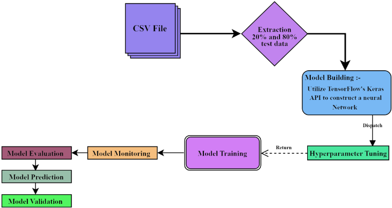
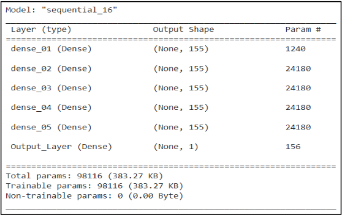
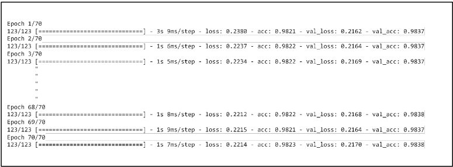
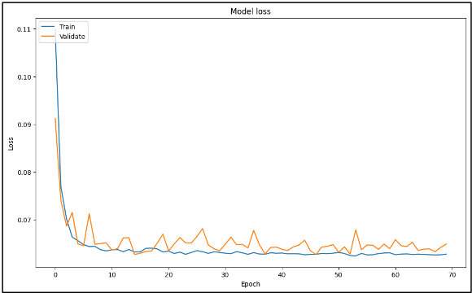
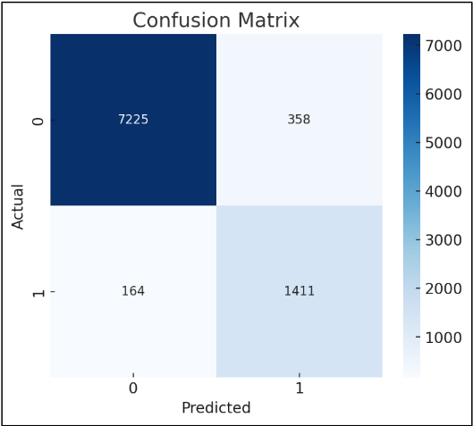

Harnessing Regenerative AI and Machine Learning for Efficient Fault Simulation
利用 Regenerative AI 与机器学习实现高效 Fault Simulation
简介
论文针对大规模设计（如 SOC 门数超过 100 million）下传统 Stuck@0/Stuck@1 fault simulation 依赖昂贵的分布式/并行计算农场、耗时长且拖累 time-to-market 的问题，提出用 AI/ML 预测模型替代重复 fault simulation 的方法。作者在一款约 325K gates 的自研 PCIe（含 PCIe v2/v3 特性）DUT 上，先用传统 EDA 仿真工具对全部 test vector 做 stuck-at fault injection 并将结果导出为 CSV，再用随机抽取的 20% 数据训练一个 5 隐藏层、每层 155 神经元的 dense 神经网络（ReLU/Sigmoid 激活、Adam 优化器、BinaryFocalCrossentropy 损失），预测其余 80% 向量的输出，并以 heat map 对比 actual 与 predicted。模型在该 PCIe DUT 上达到约 98.3% 准确率；DUT 更新后仅需用 20% 新向量重跑即可预测 80% 的结果，与 golden 首跑对比即可定位 fault status 差异。论文声称该方法显著缩短 fault simulation 时间、减少对昂贵测试性工具的依赖，但未给出具体 runtime 对比数字，实验也仅限单一 DUT 与单一观测信号。
问题
随着设计规模增大（SOC 门数超过 100 million），传统基于 Stuck@0/Stuck@1 的 fault simulation 需要在分布式/并行计算农场上进行昂贵的高性能计算且耗时很长，影响 time-to-market；论文希望减少对重复、昂贵、耗时的 fault simulation 工具的依赖，加速设计验证与 fault 检测。
方法
先用传统 EDA 仿真工具对 DUT 全部可用 test vector 做 Stuck@0/Stuck@1 fault injection 并记录输出（CSV 格式）作为训练数据；随机抽取 20%（为提升模型质量可到 80%）数据训练基于 TensorFlow/Keras 的 5 隐藏层 dense 神经网络（每层 155 神经元，ReLU/Sigmoid 激活，Adam 优化器，BinaryFocalCrossentropy 损失，学习率 0.0001 并带 ExponentialDecay），用其余 80% 数据验证，并以 heat map 对比 actual/predicted；DUT 发生变更后，仅用 20% 更新后的 test vector 重跑仿真，由模型预测其余 80% 的结果，与 golden 首跑对比以突出差异与 fault status。工具链为 Python、NumPy、pandas、TensorFlow 与 Google Colab。
关键结果
在约 325K gates 的 PCIe（v2/v3 特性）DUT 上，模型预测准确率达到 98.3%
仅用随机抽取的 20% 仿真数据训练即可预测其余 80% test vector 的输出
论文声称显著缩短 fault simulation 时间并减少对昂贵 fault simulation 工具的依赖，但未给出具体运行时间或加速比的量化数字
创新点
区别于每次全量重跑 fault simulation 的传统做法，论文将 fault simulation 结果数据作为训练集构建 ML 代理模型来预测 fault 仿真输出：首次全量仿真后，DUT 更新只需 20% 向量重跑即可预测 80% 结果，通过 heat map 与 golden run 对比定位 fault status；作者称这种用仿真加 AI/ML 检测故障的方式可减轻对昂贵耗时 fault simulator 的依赖，属于 disruptive technology。
团队参考意义
相关度级别：high
命中能力域：2.6 Fault simulation/Z01X/TFMEA | 2.7 CyberSec/自动化
理由：论文主题直接命中 2.6 域的核心技术：基于功能 stimulus/test vector 的 stuck-at fault injection 与 fault status 判定、以及 fault simulation 效率问题。团队在 LPDDR/HBM4/UCie 等 IP 上用功能 pattern 做 fault injection/grading 以支撑 TFMEA/FMEDA 论证，ECO 或版本更新后的全量 fault simulation rerun 是真实的时间成本，论文“首跑全量训练 + 更新后 20% 向量预测 80%”的思路与团队 ECO netlist rerun/回归场景直接对应；AI/ML 辅助 EDA 流程的部分也契合 2.7 的 AI 辅助自动化方向。但需注意论文是探索性工作：单一 PCIe DUT、单一观测信号 Serial_RXout、98.3% 准确率意味着存在误预测，且未涉及 fault coverage/detectability/grading 指标，不能替代可审计的 sign-off 级 fault simulation，因此价值主要在方法借鉴与自动化实验，而非直接落地为 FuSa 证据流程。
建议动作：作为方法参考存档
中文全文

Harnessing Regenerative AI and Machine Learning for Efficient Fault Simulation
Himanshu Vishwakarma，VLSI 设计工程师，Silicon Interfaces，印度孟买
(himvish@siliconinterfaces.com) Lakshya Miglani，VLSI 设计工程师，Silicon Interfaces，印度孟买 (lakshya@siliconinterfaces.com) Gopi Shrinivas Deepala，VLSI 设计工程师，Silicon Interfaces，印度孟买
(gopi@siliconinterfaces.com)
摘要 - 本文提出了一种将故障仿真与人工智能（AI）相融合、并借助机器学习（ML）技术的设计验证新方法。首先，我们使用所有可用的测试向量，通过施加 Stuck@0 和 Stuck@1 等标准故障仿真方法来验证被测设计（DUT），这些向量作为 ML 模型的训练模式。这些向量经过电子设计自动化（EDA）仿真工具处理，在每个输入信号上仿真固定型故障并记录输出。随后，这些记录的数据被输入 AI/ML 框架以构建预测模型。该模型在随机选取的 20% 数据子集上进行训练（为获得更好的模型，可使用高达 80% 的数据），采用密集分层神经网络，并利用 ReLU 和 Sigmoid 等激活函数进行优化，同时通过 epoch 长度、准确率、数据损失和学习率等超参数进行微调。训练完成后，使用其余 80% 的测试向量对模型的鲁棒性进行测试，并借助热力图及其他图形化工具评估性能、确保结果的有效性。后续的模型验证会考虑 DUT 的任何变更或更新，仅使用更新后测试向量的 20% 进行测试，以预测其余 80% 部分的结果。将这些结果与初始运行结果进行对比，可凸显任何差异及故障状态。所提出的方法不仅显著缩短了仿真时长，还降低了对大量可测试性工具的依赖，从而提高了验证过程的效率。
关键词 - 再生式、AI、ML、EDA、ReLU、Sigmoid、准确率、
I. INTRODUCTION
In the rapidly advancing field of electronic design, ensuring that circuits and systems work correctly is a major challenge. Traditionally, engineers use specific testing methods, like Stuck@0 and stuck@1, to find faults in their designs. These methods simulate potential errors in the circuits, helping identify problems. However, as electronic designs become more complex, these traditional testing methods alone aren't enough to catch every error efficiently and the problem is that for large circuits, like SOC the Gate Counts are increasing beyond 100 million and need very expensive high-performance computing on distributed and parallel computing farms to resolve and even then takes a long duration of time which is detrimental to the time to market guidelines. To improve this process, our paper introduces a new approach and method that blends traditional testing methods with modern fifth-generation Artificial Intelligence (AI) techniques, specifically using machine learning (ML). This combination aims to make testing faster and more accurate, reducing the need for exhaustive testing and saving valuable time. Here's how it works: first, we use all available test data to simulate potential faults in the design. This creates a large dataset describing how the design behaves under different fault conditions. We then use just 20% (for better models we can use up to 80%) of the sub-data to train an AI model, teaching it to recognize patterns and predict faults. This model uses complex algorithms to learn from the data, which is fine-tuned through a process of adjusting various settings to improve its accuracy and reliability. After training, we check how well the AI model works by testing it against the remaining 80% of the data. We also use tools like heat maps to visually assess the model's performance. This model is built using random 20% or up to 80% of the data as training data and model optimized dense layers (using activation function - ReLU Sigmoid, Tanh, LeakyReLU, etc.) and working with hyperparameters (epoch, accuracy, data loss, learning rate) for forward and backward propagation of error/loss functions as well as optimizers (RMSProp and Adam) to have a robust model matches results of the simulation. The model is then further used with future run
simulations of the design with 20% Test Vectors and the generative AI/ML model predicts accurately 80% of the test vector outputs. This may be compared with the gold first run and variations would highlight the fault status.
Our innovative method, combining AI with traditional simulation, not only speeds up the testing process but also reduces the reliance on extensive manual testing. This paper explores how this new approach can help electronics manufacturers more efficiently verify their designs and get products to market faster, with fewer errors.

II. REMODELING FAULT SIMULATION
In our recent simulation run, we focused on evaluating the robustness of our PCIe (a modified version developed in-house, with features of PCIe v2 and PCIe v3 with Gates estimated to be about 325K) design by validating Stuck-at faults, specifically Stuck@0 and Stuck@1 faults. The simulation was executed using traditional simulation tools, and the resulting data was compiled into a CSV format. Here's an explanation of the process and the significance of the results:
Fault Injection:
我们通过将信号强制为逻辑高电平（1）和低电平（0），在 PCIe 设计上生成了固定型故障（stuck-at fault）。通过使用这种方法，我们收集并设计的数据纯粹是仿真结果，并且是使用传统 EDA 仿真器得到的 Y 结果。
这些故障被注入到 PCIe 设计的各个节点中，以观察系统在这些故障条件下的响应。
Simulation Process:
我们使用传统 EDA 工具，在 PCIe 设计的关键节点上施加了 Stuck@0 和 Stuck@1 故障。每次仿真运行都会生成一组反映系统在这些故障条件下行为的数据。这些数据包括信号完整性、时序偏差以及 PCIe 接口操作中由此产生的任何错误等细节。
Data Collection and Refinement:
这些仿真产生的原始数据往往包含冗余和不一致之处，这可能会掩盖有意义的洞察。因此，我们采取了以下步骤：
2

以下是其具体应用方式：
III. AI/ML MODELING FOR FAULT SIMULATION
本文使用 PCIe 总线的数据集，利用来自 pandas 和机器学习（ML）库（如 TensorFlow 的 Keras 函数）的统计与概率函数，开发了具有 5 个隐藏神经网络层的 AI/ML 模型，并研究了超参数、优化器和激活函数的影响。针对该数据集，我们采用的激活函数为 'ReLU' 和 'Sigmoid'，优化器选择学习率为 0.0001 的 'Adam'；此外，将损失函数 'BinaryCrossEntropy' 应用于训练数据，将该模型拟合到训练数据上，再将模型应用于测试数据以获得实际值与预测值的对比，并将其绘制成热力图，显示出接近 98.3% 的准确率。
# -TRAIN/TEST SPLIT train_data = csv_data.sample(frac=0.2) # take 20% randomly from the data for training test_data = csv_data.drop(train_data.index) # reserve the rest for testing # separate out the y (results) from x (features) x_train = train_data.drop('Serial_RXout', axis=1) y_train = train_data['Serial_RXout'] print("X_train:- ",x_train) print("Y_train:- ",y_train) # separate out the y (results) from x (features) x_test = test_data.drop('Serial_RXout', axis=1) y_test = test_data['Serial_RXout'] print("Y_test:- ",y_test) print("X_test:- ",x_test)
3
# -MODEL BUILDING num_params = len(x_train.keys()) print(num_params,"\n") model = tf.keras.Sequential([ tf.keras.layers.InputLayer([num_params], name="Input_Layer"), tf.keras.layers.Dense(155, activation='ReLU', name="dense_01"), tf.keras.layers.Dense(155, activation='ReLU', name="dense_02"), tf.keras.layers.Dense(155, activation='ReLu', name="dense_03"), tf.keras.layers.Dense(155, activation='ReLU', name="dense_04"), tf.keras.layers.Dense(155, activation='ReLu', name="dense_05"), tf.keras.layers.Dense(1,activation='sigmoid', name="Output_Layer") 1) 1r_schedule = tf.keras.optimizers.schedules.ExponentialDecay( initial_learning_rate=0.001, decay_steps=10000, decay_rate=0.9) # learning_rate = 0.0001 optimizer = tf.keras.optimizers.Adam(learning_rate = lr_schedule) model.compile(optimizer=optimizer, loss = tf.keras.losses.BinaryFocalCrossentropy(), metrics=['acc']) model.summary()
IV. APPLICATION
我们在本文中讨论的创新方法将传统仿真与电子设计自动化（EDA）中的机器学习（ML）技术相结合，对于提高电路设计验证的效率和有效性尤为宝贵。一些领域：
以下是一些示例：
V. RESULT
我们的初步研究探索了将机器学习（ML）技术与传统仿真相结合以验证芯片设计。我们使用了涵盖各种故障场景的多样化数据集，结果令人鼓舞。我们的人工智能（AI）驱动的仿真在不牺牲精度的前提下显著减少了故障仿真所需的时间，相较传统方法展现出显著的改进。
将此处开发的 AI/ML 模型（（使用激活函数 - ReLU/Sigmoid）并使用超参数（epoch、accuracy、data loss、learning rate））应用于标准 PCIe 被测器件（DUT），结果表明可以大幅缩短时间，并通过减少所使用的重复、昂贵且极其耗时的故障仿真工具，超越上市时间预测。准确率为 98.3%
4


使用 Python、NumPy、pandas、TensorFlow 等，以及 Google® 的 Colab，上述随机行为通过使用来自 PCIe TM 总线仿真输出的数据集得以实现。
# Fit/Train model on training data x_train = x_train.astype(np.int32) y_train = y_train.astype(np.int32) history = model.fit(x_train, y_train, batch_size=32, epochs= 70, validation_split=0.1, verbose=1)
使用 model.fit 函数，训练数据（即 20% 的采样数据）被映射到训练数据上。在此过程中，数据基本上基于 accuracy、val_loss 和 val_acc 进行评估。

B) Data is being plotted against loss and epoch
为了对照信息损失情况监测训练数据（Train data），绘制了一幅图表，以便以图形化的形式获得清晰的认识。
5
# -MONITOR # Plot training & validation loss values fig = plt.figure(figsize=(12,7)) plt.plot(history.history['loss']) plt.plot(history.history['val_loss']) plt.title('Model loss') plt.ylabel('Loss') plt.xlabel('Epoch') plt.legend(['Train', 'Validate'], loc='upper left') plt.show()


6
此外，这些模型展现出出色的适应性，能够有效处理不同类型的故障。这些早期结果表明，我们的方法可以简化故障仿真流程，使芯片设计验证更加高效且更具成本效益。该方法有望加速半导体行业的产品开发周期，为广泛的测试场景提供一种多用途工具。